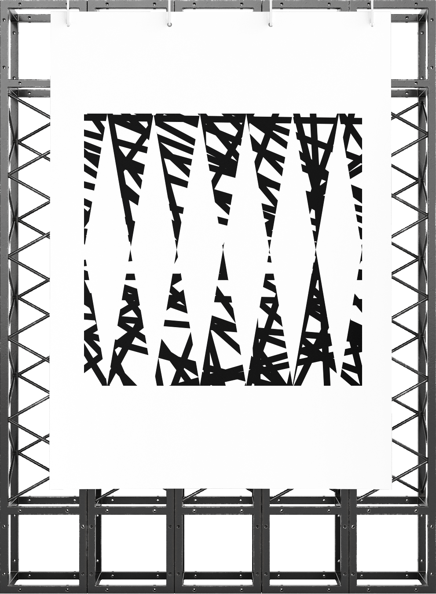
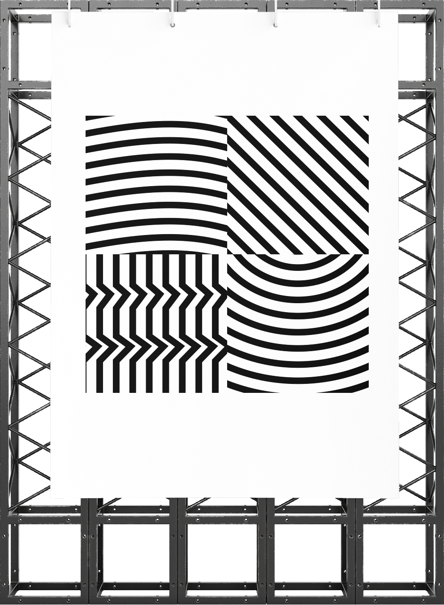
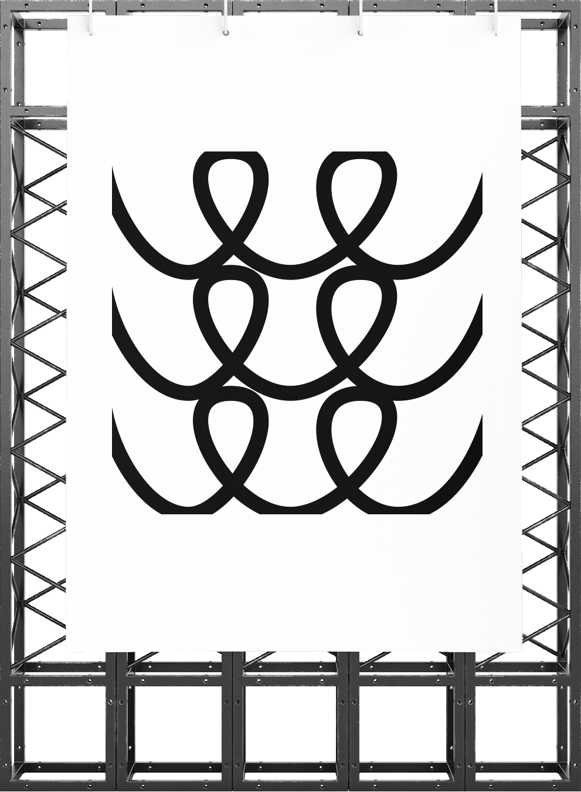

ADJECTIFS QUALIFICATIFS
PERSO - Affiche n°146
15.11.2023
Lors de la création d’une œuvre artistique, l’artiste prend un parti, en défendant les idéaux qui lui conviennent et lui appartiennent. En finalité, c’est son esprit personnel qu’il met en avant, sa personnalité, et on l’apprécie pour cela. Cependant, dans cette démarche, en favorisant un parti plus qu’un autre, une forme de « discrimination » s’opère (bien que le terme employé soit fort). Un déséquilibre se crée où une cause est écartée tandis que l’autre est placée sur un pied d’estale.
COMPLEXE - SIMPLE
DIVERSIFIE - UNIFORME
INTERCONNECTE - ISOLE
EVOLUTIF - STATIQUE
CONTROVERSE - INCONTESTE
INNOVANT - CONVENTIONNEL
BEAU - LAID
CHAOTIQUE - ORDONNE
RESILIENT - VULNERABLE
CONFLITUEL - PACIFIQUE
INSPIRANT - DEMORALISANT
FRAGILE - ROBUSTE
MYSTERIEUX - EVIDENT
TRANSITOIRE - PERMANENT
VASTE - ETROIT
INEGAL - EGAL
CONTRADICTOIRE - COHERENT
DYNAMIQUE - INERTE
INTERDEPENDANT - INDEPENDANT
IMPREVISIBLE - PREVISIBLE
MULTICULTUREL - MONOCULTUREL
EFFERVESCENT - CALME
CONTRASTE - SIMILARTIE
EPHEMERE - ETERNEL
TENACE - LACHE
INTEMPOREL - TEMPOREL
POLYMORPHE - MONOMORPHE
ADAPTATIF - INFLEXIBLE
PERILIEUX - SUR
SYMBIOTIQUE - ANTAGONISTE
CAPRICIEUX - STABLE
LUMINEUX - SOMBRE
OBSCUR - CLAIR
IMMATERIEL - MATERIEL
TANGIBLE - INTANGIBLE
MULTIPOLAIRE - UNIPOLAIRE
SUBJECTIF - OBJECTIF
OBJECTIF - SUBJECTIF
PROLIFIQUE - STERILE
EUPHORIQUE - DEPRIME
MELANCOLIQUE - JOYEUX
EXPANSIF - RESTRICTIF
CYCLIQUE - ACYCLIQUE
TRANSCENDANT - IMMANENT
IMMANENT - EXTERNE
FLUCTUANT - STABLE
HARMONIEUX - DISCORDANT
DISSONANT - MELODIEUX
INFINI - FINI
EMERGENT - ETABLI
FRAGMENTE - ENTIER
GLOBALISE - LOCALISE
HISTORIQUE - CONTEMPORAIN
FUTURISTE - PASSEISTE
ETHERE - TERRESTRE
CONCRET - ABSTRAIT
SPONTANE - PREMEDITE
CALCULE - IMPULSIF
RELATIF - ABSOLU
ABSOLU - RELATIF
MULTIDIMENSIONNEL - UNIDIMENSIONNEL
ECLETIQUE - LIMITE
HOMOGENE - HETEROGENE
HETEROGENE - HOMOGENE
EXPERIMENTAL - ETABLI
TRADITIONNEL - MODERNE
PROGRESSISTE - RETROGRADE
CONSERVATEUR - LIBERAL
FUGACE - DURABLE
PERPETUEL - EPHEMERE
ANIME - INANIME
STATIQUE - MOBILE
COMPLEX - SIMPLE
DIVERSE - UNIFORM
INTERCONNECTED - ISOLATED
SCALABLE - STATIC
CONTROVERSIAL - UNDISPUTED
INNOVATIVE - CONVENTIONNAL
BEAUTIFUL - UGLY
CHAOTIC - ORDERLY
RESILIENT - VULNERABLE
CONFLICTUAL - PACIFIC
INSPIRING - DEMORALIZING
FRAGILE - ROBUST
MYSTERIOUS - OBVIOUS
TRANSIENT - PERMANENT
VAST - NARROW
UNQUAL - EQUAL
CONTRADICTORY - CONSISTENT
DYNAMIC - INERT
INTERDEPENDANT - INDEPENDANT
UMPREDICTABLE - PREDICTABLE
MULTICULTURAL - MONOCULTURAL
EFFERVESCENT - CALM
CONTRAST - SIMILARITY
EPHEMERAL - ETERNAL
TENACIOUS - COWARDLY
TIMELESS - TEMPORAL
POLYMORPH - MONOMORPH
ADAPTIVE - INFLEXIBLE
PERILOUS - SAFE
SYMBIOTIC - ANTAGONIST
CAPRICIOUS - STABLE
BRIGHT - DARK
DARK - LIGHT
INTANGIBLE - MATERIAL
TANGIBLE - INTANGIBLE
MULTIPOLAR - UNIPOLAR
SUBJECTIVE - OBJECTIVE
OBJECTIVE - SUBJECTIVE
PROLIFIC - STERILE
EUPHORIC - DEPRESSED
MELANCHOLIC - JOYFUL
EXPANSIVE - RESTRICTIVE
CYCLIC - ACYCLIC
TRANSCENDENT - IMMANENT
IMMANENT - EXTERNAL
FLUCTUATING - STABLE
HARMONIOUS - DISCORDANT
DISSONANT - MELODIOUS
INFINITE - FINISHED
EMERGING - ESTABLISHED
FRAGMENTED - WHOLE
GLOBALIZED - LOCALIZED
HISTORICAL - CONTEMPORANY
FUTURIST - PASSEISTE
ETHERAL - EARTHLY
CONCRETE - ABSTRACT
SPONTANEOUS - PREMEDITATED
CALCULATED - IMPULSIVE
RELATIVE - ABSOLUTE
ABSOLUTE - RELATIVE
MULTIDIMENSIONAL - ONE-DIMENSIONAL
ECLECTIC - LIMITED
HOMOGENEOUS - HETEROGENEOUS
HETEROGENEOUS - HOMOGENEOUS
EXPERIMENTAL - ESTABLISHED
TRADITIONAL - MODERN
PROGRESSIVE - RETROGRADE
CONSERVATIVE - LIBERAL
FLEETING - DURABLE
PERPETUAL - EPHEMERAL
ANIMATED - INANIMATE
STATIC - MOBILE
EXUBERANT - CONTENU
MODESTE - PRETENTIEUX
OPTIMISTE - PESSIMISTE
PESSIMISTE - OPTIMISTE
IDEALISE - REALISTE
PRAGMATIQUE - IDEALISTE
ILLUSOIRE - CONCRET
REEL - FICTIF
ABSTRAIT - CONCRET
PALPABLE - IMPALPABLE
INCERTAIN - CERTAIN
DETERMINE - INDECIS
PLURALISTE - MONISTE
SINGURALISTE - PLURALISTE
PARADOXALE - CLAIR
LINEAIRE - NON-LINEAIRE
NON-LINEAIRE - LINEAIRE
SYNTHETIQUE - NATUREL
ORGANIQUE - INORGANIQUE
VOLATILE - FIXE
STABLE - INSTABLE
SUPERFICIEL - PROFOND
PROFOND - SUPERFICIEL
TRANSITOIRE - PERMANENT
IMMUABLE - CHANGEANT
ELASTIQUE - RIGIDE
RIGUEUR - LAXISME
EQUIVOQUE - CLAIR
AMBIVALENT - UNIVOQUE
AUDACIEUX - TIMIDE
FLUIDIQUE - SOLIDE
RIGIDE - SOUPLE
MYSTIQUE - RATIONEL
EMPIRIQUE - THEORIQUE
NUANCE - ABSOLU
MONOLITHIQUE - DIVERSIFIE
PIONNIER - SUIVEUR
RETROSPECTIF - PROSPECTIF
AMORPHE - DEFINI
STRUCTURE - DESORDONNE
TRANSLUCIDE - OPAQUE
OPAQUE - TRANSLUCIDE
PROLIFERE - STAGNANT
LIMITE - ILLIMITE
ENGLOBANT - EXCLUSIF
SELECTIF - INDISCRIMINE
FACETTE - UNIFACE
MONOCHROME - POLYCHROME
INTEGRE - FRAGMENTE
RATIONEL - IRRATIONEL
AUTONOME - DEPENDANT
HARMONIQUE - DISCORDANT
STRUCTURE - DESORDONNE
SYSTEMIQUE - ISOLE
SEREIN - AGITE
SOUTENABLE - INSOUTENABLE
EQUILIBRE - DESEQUILIBRE
HOLISTIQUE - FRAGMENTAIRE
ETHIQUE - AMORAL
ANALYTIQUE - SYNTHETIQUE
FUTURISTE - PASSEISTE
ECONOME - PRODIGAL
PRECIS - APPROXIMATIF
TRANSPARENT - OPAQUE
COHERENT - INCOHERENT
EMERGENT - ETABLI
ELASTIQUE - RIGIDE
IMPARTIAL - PARTIAL
INALTERABLE - ALTERABLE
EPHEMERAL - PERENNE
INSONDABLE - SONDABLE
LIMPIDE - TROUBLE
EXUBERANT - CONTENT
MODEST - PRETENTIOUS
OPTIMIST - PESSIMIST
PESSIMIST - OPTMIST
IDEALIZED - REALISTIC
PRAGMATIC - IDEALIST
ILLUSORY - CONCRETE
REAL - FICTIONAL
ABSTRACT - CONCRETE
PALPABLE - IMPALPABLE
UNCERTAIN - CERTAIN
DETERMINED - UNDECIDED
PLURALIST - MONIST
SINGURALIST - PLURALIST
PARADOXICAL - CLEAR
LINEAR - NON-LINEAR
NON-LINEAR - LINEAR
SYNTHETIC - NATUREL
ORGANIQUE - INORGANIQUE
VOLATILE - FIXED
STABLE - UNSTABLE
SUPERFICIEL - DEEP
DEEP - SUPERFICIAL
TRANSIENT - PERMANENT
IMMUTABLE - CHANGING
ELASTIC - RIGID
RIGOR - LAXITY
EQUIVOCAL - CLEAR
AMBIVALENT - UNIVOCAL
BOLD - SHY
FLUDIC - SOLID
RIGID - FLEXIBLE
MYSTICAL - RATIONAL
EMPIRICAL - THEORETICAL
NUANCED - ABSOLUTE
MONOLITHIC - DIVERSIFIED
PIONEER - FOLLOWER
RETROSPECTIVE - PROSPECTIVE
AMORPHOUS - DEFINED
STRUCTURED - MESSY
TRANSLUCENT - OPAQUE
OPAQUE - TRANSLUCENT
PROLIFERATE - STAGNANT
LIMITED - UNLIMITED
ALL-ENCOMPASSING - EXCLUSIVE
SELECTIVE - INDISCRIMINATE
FACETED - UNIFACE
MONOCHROME - POLYCHROME
INTEGRATED - FRAGMENTED
RATIONAL - IRRATIONAL
AUTONOMOUS - DEPENDENT
HARMONIC - DISCORDANT
STRUCTURED - DISORGANISED
SYSTEMIC - ISOLATED
SERENE - AGITED
SUSTAINABLE - UNSUSTAINABLE
BALANCED - UNBALANCED
HOLISTIC - FRAGMENTED
ETHICAL - AMORAL
ANALYTICAL - SYNTHETIC
FUTURISTIC - PASTISTIC
ECONOMICAL - PRODIGAL
PRECISE - APPROXIMATE
TRANSPARENT - OPAQUE
COHERENT - INCOHERENT
EMERGENT - ESTABLISHED
ELASTIC - RIGID
IMPARTIAL - PARTIAL
INALTERABLE - ALTERABLE
EPHEMERAL - PERENNIAL
UNFATHOMABLE - UNFATHOMABLE
CLEAR - CLOUDY
Ceci s’explique par le fait qu’en tant qu’être humain, nous agissons tous au rythme de nos idéaux et de notre personnalité, que ce soit consciemment ou non, en estimant ce qui semble être bon ou mauvais. En suivant cette logique, on peut se poser la question suivante : « est-ce qu’une seule personne est capable de juger tout un fait social sans se laisser persuader par ses idéaux personnels propres ? ». Sans que cela soit une critique.
La production graphique ci-dessous repose sur cette réflexion, où, excepté le choix du sujet abordé et la construction de l’affiche, aucun parti pris de ma part n’a été pris. En faisant appel à une intelligence artificielle : ChatGPT (configurée en tant qu’entité externe à notre société, une entité tierce et neutre), j’ai pu créer tout un jugement sur notre société, sans que j’exprime mon avis (ce qui rejoint l’idée d’une critique équitable). Ce jugement prend la forme d’une liste de plus de 200 adjectifs, où des couples de contraires se forment, symbolisant la société très controversée et extrémiste dans laquelle nous vivons.
La construction de l’affiche repose sur cet aspect, divisée en lignes et colonnes, elle associe les contraires par le biais d’une composition en isométrie, avec une face claire et une autre sombre, réservée, respectivement, pour l’adjectif positif, et l’adjectif négatif (face cachée de l’iceberg, de la lune, etc…). Le tout a été pensé pour une production physique où chaque élément est étudié pour favoriser une impression en sérigraphie.
VIOLENCES FRANCAISES
PERSO
14.02.2024
Sur le territoire national, à travers les années passées, nous avons vécu et traversé de nombreuses violences sociales, notamment par le biais des manifestations. Cette production artistique et graphique repose sur ces protestations, où elle fait intervenir de la même manière et dans le même rôle, l’intelligence artificielle.
Le texte de l'affiche :
Travail graphique expérimental visant à établir une critique de notre société en faisant appel à une entité externe à notre société, l'intelligence artificielle. Sur l'évolution de notre humanité, que ce soit dans un sens positif ou négatif, sommes-nous les mieux placés pour juger de ce qui est bon ou mauvais ? Un avis externe ne serait-il pas nécessaire pour prendre des décisions ? Confier une prise de décision visant à faire évoluer notre monde à une entité externe n'est-il pas un facteur de soumission envers cette entité, voire de destruction ?
Une entité, une intelligence artificielle, du même créateur, configurée en deux "cerveaux" artificiels différents n'ayant pas les mêmes compétences et connaissances, permet une analyse et une traduction graphique des violences de notre société, en particulier notre société française. Un cerveau, transformé en journaliste, pour juger des faits violents avec une liste d'adjectifs (obtenir un jugement, une critique de notre société par l'intelligence artificielle). Un autre cerveau, transformé en philosophe/chercheur, traitant de la relation de l'image, du visuel avec le verbal, le mot (obtenir une description d'un visuel qui peut représenter/traduire cette critique). La résultante de cette combinaison est la traduction visuelle d'un son, d'un cri, d'un fumigène, d'un coup de poing, d'un pleur, mais aussi d'un mouvement de soutien, d'un moment d'innovation, d'un moment d'inspiration, d'un moment de solidarité. Cette traduction visuelle est l'interprétation des actualités de notre pays par cette entité externe, interprétation qui fut elle-même interprétée par la réflexion de l'artiste pour en créer une combinaison graphique.
La critique est la suivante (sous forme de liste d'adjectifs où chaque adjectif a un motif correspondant, allant du coin en haut à gauche au coin en bas à droite) :
«CHATGPT est conçu dans le but d'aider les humains en fournissant des informations et une assistance, dans le respect des principes éthiques et de sécurité pour le bien-être de la société.» l’entité externe, ChatGPT.
Description :
Cependant, dans cette production, ChatGPT prend deux rôles. Le premier permet la génération du jugement traitant des violences et protestations françaises, prenant la forme d’une liste d’adjectifs de 35 mots (contraintes techniques). Le second permet la traduction de ces 35 mots en une composition graphique à base de formes géométriques. À ce moment-là, uniquement une description de la composition a été générée, c’était mon rôle d’adapter cette description verbale en une construction graphique.
Un mot a une définition propre et commune à l’ensemble de notre société et de notre population, en revanche, une composition graphique n’a rien de figé et de prédéfini, par conséquent, sa lecture et sa compréhension sont propres à chaque individu. Communiquer et diffuser sous cette forme constitue une forme de richesse d’interprétation et de compréhension, où chaque personne s’appuie sur son expérience et son vécu personnel.
De ce fait, bien que le sujet abordé soit identique et concerne tout le monde, son interprétation, son vécu, sa vision diffère entre les différents profils des spectateurs. À l'image de la richesse sociale dont fait preuve notre monde.
MASSIVES
SOCIALES
CONTESTATAIRES
REVENDICATIVES
ETUDIANTES
PACIFIQUES
CONFLUENTES
MILITANTES
REVOLTEES
REPRESSIVES
CHAOTIQUES
SYMBOLIQUES
EMOTIONNELLES
ENERGIQUES
CITOYENNES
RESONNANTES
BRUYANTES
COLOREES

VIOLENTES
TUMULTUEUSES
INNOVANTES
REVOLUTIONNAIRES
DETERMINEES
INSPIRANTES
INQUIETANTES
INSTRANSIGEANTES
REACTIVES
INFLUENTES
INCLUSIVES
DIVERSIFIEES
MEDIATISEES

INATTENDUES
EMERGENTES
FESTIVES
MOBILISATRICES

LOVE IS NOT DEFINED
PERSO
19.02.2024
Peu importe l’époque à laquelle nous vivons, la société, le pays dans lequel nous vivons, il a toujours existé un lien, un sentiment, une émotion qui nous unissaient et nous unit tous et toutes, que ce soit sur le plan amical ou relationnel. Aussi vieux que notre existence, l’amour a constamment rythmé notre quotidien, en subissant, en s’adaptant aux changements sociaux et aux idéaux des personnes influentes précédentes et actuelles. Depuis peu, notre société a considérablement évolué, et est, on peut le dire, passée dans une nouvelle ère, ceci s’explique par l’arrivée et la création des nouvelles technologies (notamment internet, les téléphones, les ordinateurs, etc…).
Naturellement, on peut se questionner sur la signification de ce sentiment après une telle révolution industrielle et technologique. Ce projet traite de cette problématique en faisant intervenir une opinion tierce ayant un recul autre et potentiellement plus objectif que notre vision et perspective. L’évolution de l’amour est abordée, en prenant origine 40 ans en arrière, jusqu’à nos jours en passant par cette révolution sociale. Le tout est structuré par le biais d’une dissertation.
Pour faire écho, visuellement, au passé du sentiment amoureux, ce projet prend la forme d’un parchemin où le texte généré par ChatGPT fut retranscrit par une machine à écrire. On a tendance à penser qu’au premier abord, le sentiment est identique à celui que d’autres ont pu connaître, mais en finalité, lorsqu’on se penche dans son contenu et dans ces détails, on s’aperçoit des différences et des changements. La même logique s’applique sur ce parchemin, les connotations historiques laissent suggérer un amour universel et inchangé, mais le contenu du texte prouve le contraire.
La rédaction du texte tient en une composition de formes géométriques étant la traduction du résumé de la dissertation par une représentation graphique, également suggérée par ChatGPT. Également, un amour parfait est inexistant, un texte sans fautes l’est aussi.

SZEMET
PERSO
2024
Au moment où l’inflation fait rage, où les coûts de production augmentent, où la question écologique au centre des préoccupations soulève beaucoup de débats, les métiers de la création se doivent d’innover et de redoubler d’imagination pour faire face à ces problématiques. Créer sans achats supplémentaires ou avec un budget restreint peut s’avérer être un véritable défi. Cette typographie est le défi que j’ai décidé de relever, créer un alphabet complet sans aucun achat supplémentaire et uniquement avec les moyens disponibles.


Sur un principe de recyclage, l’ensemble des lettres de l’alphabet en haut de casse ainsi que tous les chiffres furent dessinés par le biais de déchets métalliques, plastiques, cartonnés, etc… Ces déchets sont issus de ma consommation personnelle, ce qui implique une réduction des coûts de pollution, me concernant. C’est sur ce point que réside l’aspect écologique et humanitaire de la typographie elle-même.
Dans sa réalisation, plusieurs étapes ont été suivies pour arriver à ce résultat : construction des caractères sur une feuille A4 à partir des déchets, scan des tous les caractères, retouches, puis vectorisation de chacun d’entre eux pour une utilisation étendue sur de nombreux projets.
À mon échelle, je contribue à un changement social allant dans un sens que nous devons tous suivre, où je ne condamne pas une activité entière, mais je l’adapte à un mode de vie et de construction responsable.

"UJRAHASZNOSITOTT HULLADEKBOL KESZITETTEM A TIPOGRAFIAT" traduit de l'hongrois "J'ai crée une typographie avec des déchets recyclables"